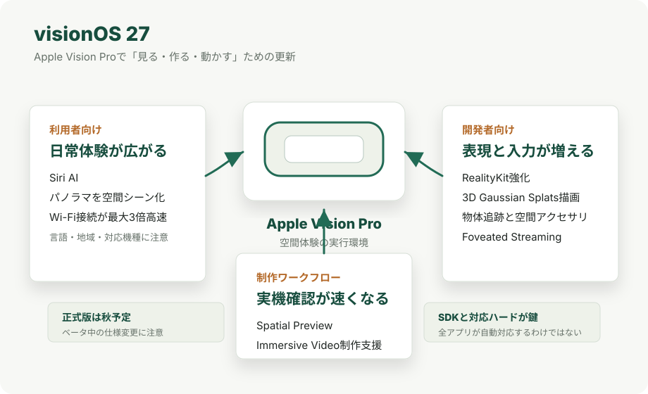

Apple / visionOS
visionOS 27はApple Vision Proをどう変えるのか
AppleはWWDC26で、iOS 27やmacOS 27などとあわせてvisionOS 27を発表しました。 Apple Vision Pro向けには、ユーザーが体験する機能だけでなく、3D制作、ゲーム、ストリーミング、物体追跡を支える開発基盤も大きく更新されています。
結論
visionOS 27は、Apple Vision Proの画面表示だけを少し変える更新ではありません。 ユーザー向けにはSiri AI、写真の空間化、Wi-Fi接続の高速化などが加わり、開発者向けにはRealityKit、Reality Composer Pro 3、Spatial Preview、Foveated Streaming、物体追跡、Apple Immersive Video関連の機能が拡張されます。
初心者向けに一言でいうと、visionOS 27は「Vision Proで見る・作る・動かす」ための土台を広げる更新です。 写真やAIのように一般ユーザーがすぐ理解しやすい機能もありますが、発表内容の多くは、より自然な3D体験や本格的な制作環境を作るための開発者向け機能です。
ただし、2026年6月9日時点ではベータ段階です。 Appleは開発者向けテストを2026年6月8日に開始し、パブリックベータを翌月、正式版を秋の無料ソフトウェアアップデートとして提供予定と説明しています。 地域、言語、対応機種、規制によって使える機能が変わる点には注意が必要です。
何ができるようになるのか

Appleの発表を大きく分けると、3つの層があります。 1つ目は、Siri AIや写真の空間化のように、利用者が直接触る機能です。 2つ目は、RealityKitや物体追跡のように、アプリの表現力や操作性を上げる開発者向け機能です。 3つ目は、MacからVision Proへ空間コンテンツを確認する仕組みやApple Immersive Videoの制作支援など、制作現場の作業を速くする機能です。
利用者向けの主な変化
- Siri AIがVision Proにも深く統合される。 Appleは、Siri AIがiPhone、iPad、Mac、Apple Watch、Apple Vision Proに統合され、画面上の内容、個人の文脈、Web上の最新情報を使って回答できると説明しています。
- パノラマ写真を空間シーンに変換できる。 Apple Vision Proのユーザーは、パノラマ写真をSpatial Scenesに変換し、自分用のEnvironmentとして使えるようになります。 旅行先や思い出の写真を、平面写真ではなく周囲に広がる空間として楽しむ用途が想定できます。
- Wi-Fi接続が最大3倍速くなる。 AppleはVision ProのWi-Fi接続が最大3倍高速になると説明しています。 これはアプリのダウンロードやクラウド同期だけでなく、ストリーミング型の空間体験にも効いてくる可能性があります。
- Apple Intelligenceの利用条件に注意が必要。 Apple IntelligenceとSiri AIは、対応デバイス、対応言語、地域によって提供状況が変わります。 Siri AIはまず英語設定の対応デバイス向けベータとして提供され、言語対応は段階的に広がる予定です。
開発者向けの主な変化
| 領域 | 追加・強化されること | 初心者向けの意味 |
|---|---|---|
| RealityKit | Physical Space Lighting、Projective Textures API、リアルタイム布シミュレーション、Reverb Mesh API、3D Gaussian Splatsの効率的な描画。 | 仮想物体の光、布の動き、音の反響、現実物の3Dスキャン表現を、より自然に扱いやすくなる。 |
| Reality Composer Pro 3 | Mac上で3Dコンテンツを作り、Live PreviewでApple Vision Pro上の見え方をすぐ確認できる。Xcode連携、ビジュアルスクリプティング、生成系支援も強化。 | 3Dの配置やアニメーションを直してから実機で確認するまでの待ち時間が短くなる。 |
| ゲームエンジン | Unityで空間アクセサリを扱える。GodotはCompositorServices、RealityKitレンダリングプラグイン、PHASE音声プラグインに対応。 | UnityやGodotで作ったゲームをVision Pro向けに展開しやすくなる。 |
| Spatial Preview | MacアプリからQuick Look on visionOSへ接続し、空間写真、Apple Immersive Video、3Dコンテンツ、USD編集をVision Proで確認できる。 | 制作者がMacで作った空間コンテンツを、Vision Proでその場確認しながら調整しやすくなる。 |
| Foveated Streaming | Vision ProからPC、ワークステーション、クラウドサーバーへ接続し、見ている付近を中心に高品質映像を送る。OpenXRアプリはNVIDIA CloudXR SDKと連携可能。 | 重い3D描画を外部マシンに任せ、Vision Pro側では必要な部分を効率よく表示できる。 |
| 物体追跡 | 高フレームレート追跡、Create MLの拡張トレーニング、補正なしのメートル空間ポーズ取得、iOSとの共通化、最大90Hzの空間アクセサリ追跡。 | 手に持った道具や専用コントローラーを、現実空間内でより正確に使えるアプリを作りやすくなる。 |
| Apple Immersive Video | IMSへの追加、カメラ表示コマンド、MacからVision Proへのリアルタイムプレビュー、カスタムコンポジタ、ワイドポータル対応。 | 没入型映像の撮影、編集、確認、配信表現を、より本格的な制作ワークフローに近づけられる。 |
制作ワークフローへの意味
visionOS 27で特に重要なのは、空間コンテンツを作る人の試行錯誤が短くなることです。 たとえばReality Composer Pro 3のLive PreviewやSpatial Previewを使うと、Macで作った3Dシーンや空間写真をVision Proで確認しながら調整できます。 これは、2D画面だけでは判断しにくい奥行き、見上げた時の配置、照明の当たり方、素材感を実機に近い状態で確認しやすくするものです。
3D Gaussian SplatsをRealityKitで効率的に描画できる点も、今後の制作には大きいです。 3D Gaussian Splattingは、実物を撮影して写真のようにリアルな3D表現を作る技術として注目されています。 visionOS 27の発表は、そうした現実ベースの3D素材をApple Vision Proの体験に組み込みやすくする方向を示しています。
一方、Foveated Streamingは、Vision Pro単体では重すぎる処理を外部のPCやクラウドで実行する方向です。 ユーザーが見ている付近に高品質な映像を集中させるため、全画面を常に最高品質で送るより効率的です。 フライトシミュレーター、設計レビュー、大規模な3D空間の可視化など、計算負荷の大きい用途と相性があります。
関連するアクセシビリティ更新
AppleはWWDC26前の2026年5月にも、Apple Vision Proを含むアクセシビリティ関連の更新を発表しています。 たとえば、ライブ会話やアプリ内音声を字幕化する仕組み、Apple Vision Proの目のトラッキングを使って対応する車いすを操作する機能などです。 ただし、これらは利用環境や対応機器に条件があり、Apple Vision Pro Developer Strapが必要になる有線接続のような注意点もあります。
つまりvisionOS 27周辺の流れは、単に映像が派手になるだけではありません。 空間コンピューティングを、視覚、聴覚、身体操作、制作現場の各面から実用に近づけようとしていると見ると理解しやすくなります。
現時点の注意点
- 2026年6月9日時点ではベータ段階であり、正式版までに仕様、名称、提供時期が変わる可能性があります。
- Siri AIやApple Intelligenceは、対応デバイス、言語、地域、規制で提供状況が変わります。日本語で同じ時期に全機能が使えるとは限りません。
- 3D Gaussian Splatsの描画対応は、画像1枚から自動で3D素材を作れるという意味ではありません。素材生成、最適化、権利確認は別途必要です。
- Foveated Streamingは、外部PCやクラウド側のエンドポイント、ネットワーク品質、アプリ側の統合が必要です。Vision Pro単体で全アプリが自動的に高速化するわけではありません。
- Unity、Godot、空間アクセサリ、Apple Immersive Video関連の機能は、対応SDK、対応エンジン、対応ハードウェアの提供状況に左右されます。
参照URL
- Apple Newsroom: WWDC26: Apple unveils next generation of Apple Intelligence, Siri AI, powerful parental controls, and an expansive set of software improvements
- Apple Developer: What’s new in visionOS 27
- Apple Developer: WWDC26 visionOS guide
- Apple Developer: visionOS 27 beta (24M5291p)
- Apple Newsroom: Apple introduces Siri AI, a profoundly more capable and personal assistant
- Apple Newsroom: Apple unveils new accessibility features, and updates with Apple Intelligence